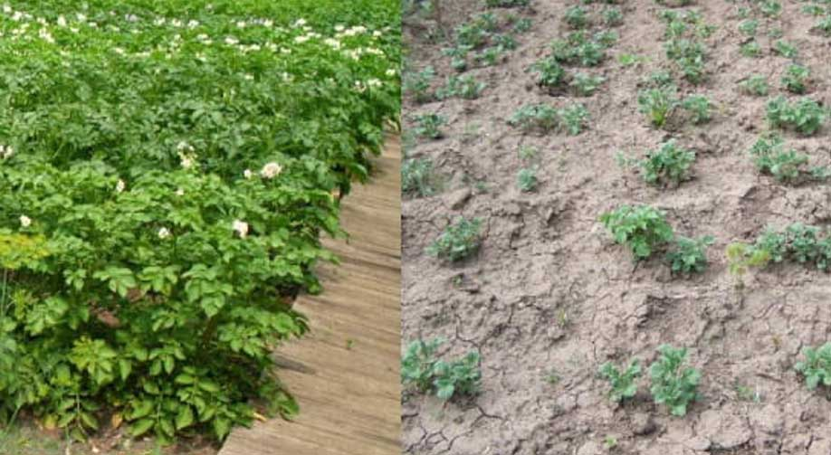
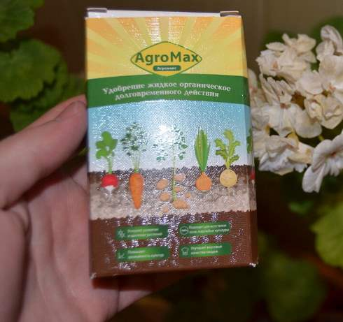
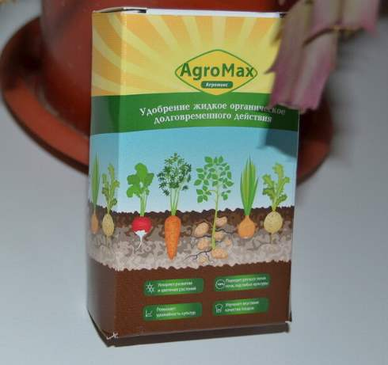
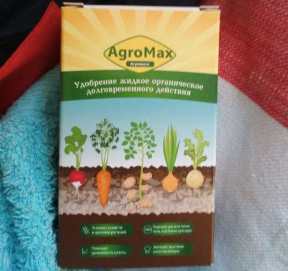
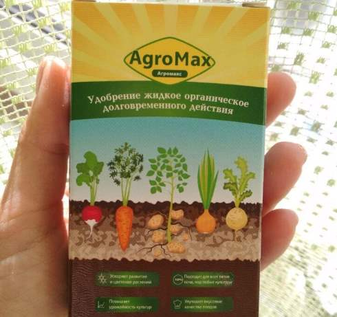

КАК Я ЗАРАБОТАЛ НА НОВУЮ МАШИНУ НА ПРОДАЖЕ КАРТОШКИ В ПРОШЛОМ ГОДУ! А В ЭТОМ ЗАРАБОТАЮ ЕЩЕ БОЛЬШЕ!
. . От редакции: К нам регулярно поступают письма от наших читателей с историями о том, как трудно жить на пенсию и на мизерные провинциальные зарплаты. Сегодня мы публикуем письмо нашего постоянного читателя Алексея Киселева из города , который нашел необычный способ заработка и любезно поделился им со всеми!
Здравствуйте, уважаемые читатели! Сегодня я хочу вам рассказать о том, как мне буквально за пару месяцев удалось заработать 425 000 рублей, ничего не делая.
Меня зовут Алексей, мне 46 лет. Я живу в городе , раньше работал в колхозе, потом его закрыли, дети все разъехадлись, живу один. Работаю на рынке грузчиком, зарплата у меня небольшая – 17 тысяч рублей. Собственно, никогда никаким бизнесом я не занимался, всю жизнь в полях работал. Теперь на даче летом выращиваю немного овощей: картошечка, капустка, огурчики, лучок.
Дача небольшая – всего 6 соток. Но урожая хватает. Все же помощь, экономия бюджета. Но все равно хочется и детям помочь. Средний сын Омар на 5 курсе учится. Младшая дочь только поступила в институт. Дочка моя старшая в разводе с мужем, одна воспитывает деток. В общем, деньги не лишние, сами понимаете.
Прошлой весной в одном журнале я прочитал статью о том, как пенсионерка из Вьетнама организовала свой бизнес. Биолог по образованию, будучи на пенсии она решила применить свои знания на практике и заработать денег. Она закупила особое удобрение и стала выращивать у себя на участке овощи и фрукты. В итоге вьетнамская пенсионерка на продаже овощей за полтора года озолотела и переехала в новую квартиру. Сейчас ее уже знают журналисты со всего света.
Короче говоря, начитавшись этого, я тоже решил попробовать выращивать картофель. Занялся поисками информации об удобрении этом, стал читать о том, как лучше им пользоваться, как правильно удобрять. В итоге нашел Agromax, выяснил, что его можно использовать как во время посадки, так и уже тогда, когда рассада посажена. Разница в том, что если вы используете его до посадки, то почти все посаженные картофелены вырастают! А когда вы используете Agromax после посадки, то картошка вырастает и начинает плодоностить намного быстрее!
Я взял сразу две коробки удобрения. Заказывал на официальном сайте, как мне посоветовали на форуме садоводов. Сразу прилагаю ссылку, чтобы вы не потерялись, если все-таки решите последовать моему примеру. Заказывал на официальном сайте. Заказ пришел быстро. Предварительно мне позвонила девушка очень приятная, уточнила все детали заказа, проконсультировала по доставке, по продукту. В общем, сервис мне понравился. Заказ пришел быстро - я выбрал курьерскую доставку. Удобрение доставили мне прямо домой.
И вот как только сошел снег я сразу же отправился на дачу испытывать удобрение! Я на участке своем три сотки картошки посадил с удобрением, а три сотки по старинке. Вернувшись через 15 дней на участок я просто ОПЕШИЛ! Картошка проросла и уже зацвета! В то время как неудобренные пол участка еще даже из земли не показались.

Радости моей не было предела! Когда я пришел на огород во второй раз и попробовал выкопать ради интереса один кустик удобренной картошки, я опешил снова! С ОДНОГО КУСТА Я СОБРАЛ ЦЕЛОЕ ВЕДРО КАРТОШКИ!
Ради интереса выкопал еще 12 кустиков, и там ее было не меньше! Таким образом, с 12 кустов картошки я собрал ровно 3 мешка! И выросла она за 3(!) недели. Не долго думая, на следующий день я быстро выкопал всю оставшуюся картошку (с 3 х соток получилось больше 50 мешков!), заказал еще удобрения и принялся ждать пока доставят, заказал сразу с запасом, ведь я понял, что с начала весны до конца сентября, смогу снять 6-7 урожаев со своего участка! Было решено засадить картошкой весь участок, что бы удвоить урожай.
Удобрение мне привезли достаточно быстро, я выбрал курьерскую доставки, ибо на почту России надежды нет! А мне нужно было как можно скорее сажать картофель!
Как только удобрение привезли, я взял ту картошку что вырастил недавно, и посадил ее снова, щедро добавив удобрения в почву и стал ждать пока вырастет. В то время как моя картошечка росла, я договорился с начальником рынка, мне разрешили ее продавать там, как на дурачка смотрели правда, я же обещал привести горы картошки тогда, когда еще никто урожай даже и не думал собирать!
Какого же было их удивление, когда я собрал урожай и выставил на рынок! Во второй раз у меня за 3 недели уродилось 156 мешков картошки с 6 соток. Выяснилось, что удобрение положительно влияет на землю и на сами плоды, получается, что чем чаще ты выращиваешь картошку с удобрением этим на одном и том же месте, тем больше урожая тебе светит!
Не буду вас томить, скажу лишь только то, что с апреля по октябрь я сажал и собирал картофель 7(!) раз. Всего за это время со своих 6 соток мне удалось собрать где то 1800 мешков картошки! Продав ее я новый форд себе купил! Все оказалось очень плодовито и экономично. Растет картошка тоже на удивление очень быстро. В этом году я еще и соседа участок обработать удобрением этим перед посадкой хочу! У него детки маленькие, ему деньги то тоже нужны!
Картофель растет высшего сорта: ровненький, аккуратненький. Гораздо лучше магазинных. Полезный, свой. У меня до сих пор в погребе остатки с прошлого года лежат, и гнить даже не думают, и вкус потрясающий. Очень рекомендую попробовать использовать удобрение. Затраты минимальные, результат потрясающий. Лично я в этом году планирую повторить и увеличить свой прошлогодний результат! Заказал себе уже 40 пачек удобрения Agromax. Может получиться за дачный сезон на квартиру большу заработать! Вот такие вот дела. Надеюсь, что моя статья была вам полезна, и у вас тоже получится добиться таких прекрасных результатов.
Добавлено : Мы связались с производитем удобрения Agromax, занимающимся разработкой и улучшением выращивания продуктов питания. Они подтвердили слова Алексея о том, что картофель отлично растет и развиваются после обратботки удобрением Agromax, что куст картофеля полноценно вырастает за 2,5-3 недели, что с куста получается собрать 8-10 килограмм картофеля. Производитель сообщил, что удобрение прошло все испытания и получило специальный сертификат.
Сертификат соответствия Agromax
А самое главное, для наших читателей производитель предложил специальную цену - 149 рублей.
Что бы получить удобрение Agromax достаточно выполнить три условия. В срок до (включительно):
- Заполнить заявку на официальном сайте.
- Дождаться звонка оператора и указать, на какой адрес доставить удобрение
- Через 4-7 дней (необходимых на доставку) нужно пройти на почту и получить удобрение.
Доставка удобрения осуществляется Почтой в любой регион цена удобрения составляет всего 149 рублей.
Комментарии
Ирина Васильева
Пользовались в прошлом году тоже. Муж принес откуда-то. Результаты такие же, как у вас, только мы сразу весь огород им обработали) не знали, куда девать урожай. Много даже выкинули – не успевали обрабатывать. В этом году думаем поменьше сажать, а может и продавать начнем как вы)

Анна Потапенко
И тут про это удобрение. Дня 2 назад смотрела передачу по ТВ про него. Якобы новое изобретение канадских ученых. Многие его хвалили.
 Алексей Ухачев
Алексей Ухачев
Присоединюсь к рекомендации. Очень полезное и качественное удобрение!!! Урожайность реально повышается в разы! Мы огурцы и картошку в прошлом году обратабывали им, раньше собирали по 7 мешков всего, а в прошлом году 70 мешков собрали! Сосед горел от зависти! 
Алексей Рыбков
Прочитал на сайте про это удобрение. Впечатляет! Раньше на знал, что такие бывают. Сделал заказ.
Галина Дроздова
Тоже пользовались таким. Из всего того, что раньше применяли, самое эффективное. Урожай повысился значительно. В этом году тоже заказ на официальном сайте оформили, через 3 дня уже привезли!

Елена Астаханова
Давно про него слышала, но все не купила. Теперь, наверное, пришло время. Соседи по квартире о нем много говорили.
 Сергей Черныш
Сергей Черныш
Хорошо работает в северных регионах, так как быстро восстанавливает плодородность почвы после зимы. Также им очень хорошо обрабатывать семена перед посадкой и черешки.
Сергей Иванов
Спасибо вам за такую ценную информацию! Вы правы! На пенсию выжить невозможно, я тоже себе закажу удобрение, будет и у меня дополнительный доход!
Павел Слесаренко
Видал такое удобрение в продаже на рынке, хотел купить, но ценник был нереальный! А по акции взял, сразу 14 штук. Теперь и у меня будут денежки водиться, а то надоело жить в бедности, хочу пожить нормально!
Лариса Николаева
Так вот оказывается, как можно зарабатывать на своем саде то! Наконец-то, я узнала, а то моя подруга в прошлом году только и успевала овощи с фруктами и ягодами на рынок отвозить перекупщикам, новую квартиру купила себе за лето! А мне не рассказывала откуда у нее урожайность такая. Вот теперь я все узнала, спасибо! Закажу себе!
Николай Романов
Блин, спалили тему! Я тоже так ягоды и овощи выращиваю и продаю трейтий год уже! Agromax - реальные бабулесы дает!. Жаль, что теперь многие узнают, а так это был мой секрет. Вот недавно себе новую партию удобрения заказал, еще не распечатывал.

Марина Семенова
Побывала на сайте производителя, все разузнала, действительно рабочая технология. Радует, что там есть горячая линия поддержки, они на связи всегда. Себе заказала, нельзя упускать такой шанс хорошо подзаработать Упустишь, потому всю оставшуюся жизнь жалеть будешь.
Павел Ляпичев
Большое спасибо за рекомендацию. Очень интересно. Удобрение заказал, попробую. Обещали в течение недели доставить.